THE ENTRY ENGAGEMENT
THE 4iC DIAGNOSTIC
A scoped, fixed-fee diagnostic across the four intelligences. Before you commit to transformation, know what you are committing to: a senior read of where you stand, what matters most, and what to do next.
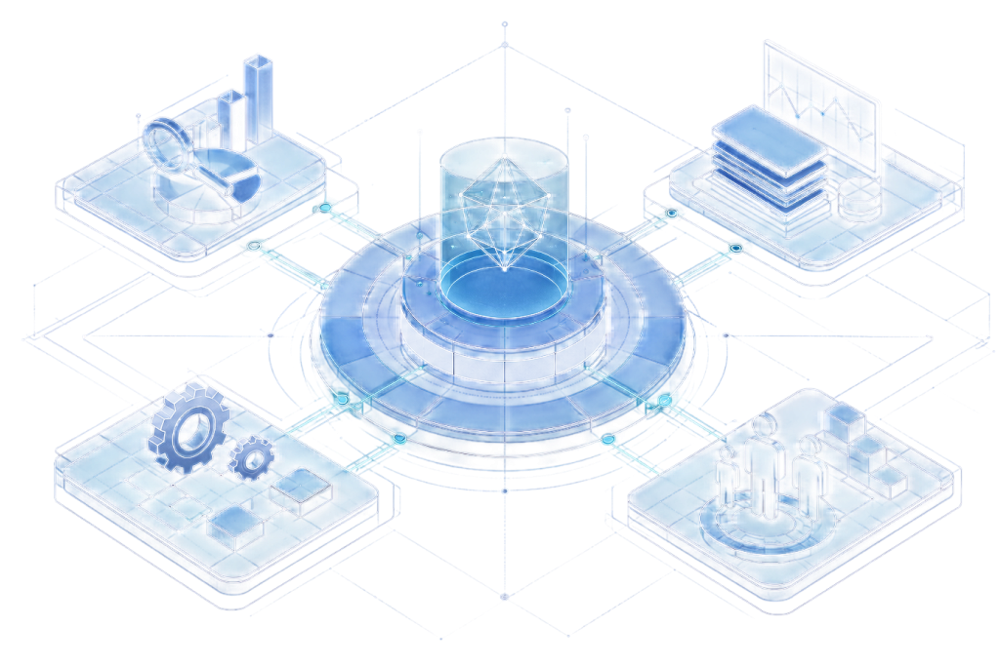
FIXED SCOPE. FIXED FEE. A DECISION AT THE END.
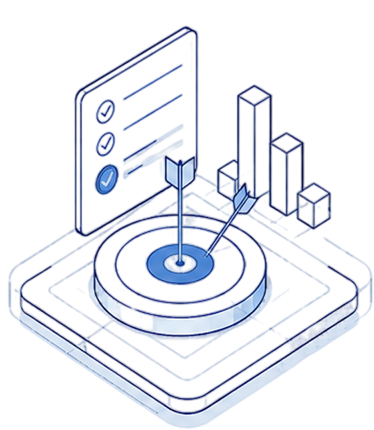
SCOPE
We agree the decision the diagnostic must serve, and weight the lenses to it.
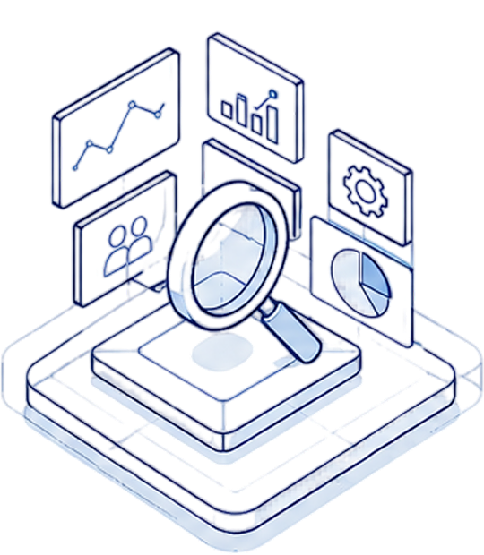
ASSESS
Senior-led assessment across all four intelligence terrains.
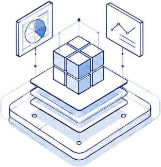
SYNTHESISE
Findings prioritised into one integrated read: what is true, what it means.
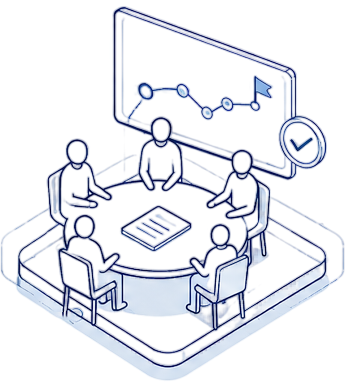
DECIDE
A leadership session: the roadmap, the priorities, the go or no-go.
FOUR LENSES, ONE READ
MARKET
Landscape, regulation, buyers, and channels.
OPERATIONAL
Cost, bottlenecks, and readiness to scale.
CAPACITY & CAPABILITY
People, governance, and whether gains persist.
DIGITAL
Systems, data, and where AI genuinely pays.
WHAT YOU RECEIVE
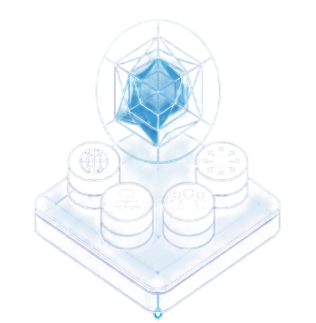
FOUR-INTELLIGENCE
BASELINE
A four-intelligence baseline of where your organisation actually stands.
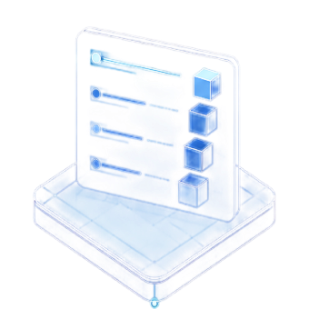
PRIORITISED
FINDINGS
Prioritised findings, ranked by impact on the decision you face.
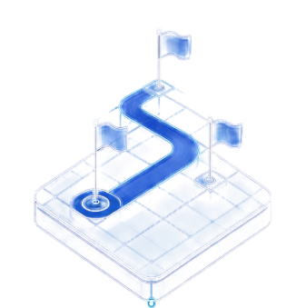
PHASED
ROADMAP
A phased roadmap sequencing what to do first, next, and later.
LEADERSHIP
WORKING SESSION
A leadership working session to land the read and agree the path.
Proceed. Redirect. Or stop. With confidence.
WHY START HERE
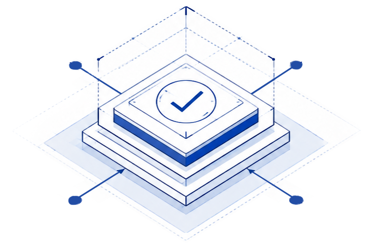
DE-RISKED BY
DESIGN
A fixed fee for a defined outcome.
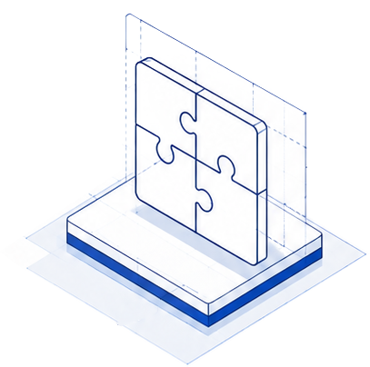
PRICED WORK,
SHAPED WORK
We never price a transformation whose shape is unknown. Phase 0 gives it shape.
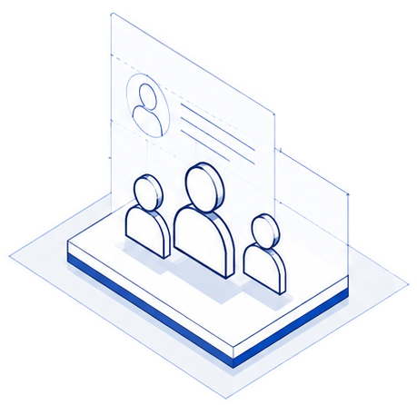
SENIOR-LED
THROUGHOUT
Partners do the reading, not juniors.
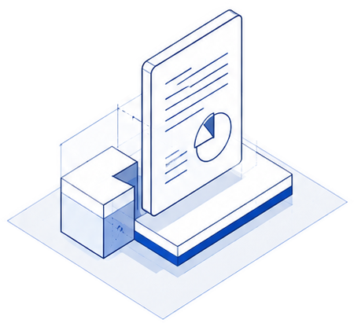
USEFUL EVEN IF
YOU STOP
The read stands on its own. No lock-in.
The roadmap converts into priced, phased engagements, each mapped to the intelligence that carries it.
You commission the phases the decision justifies.
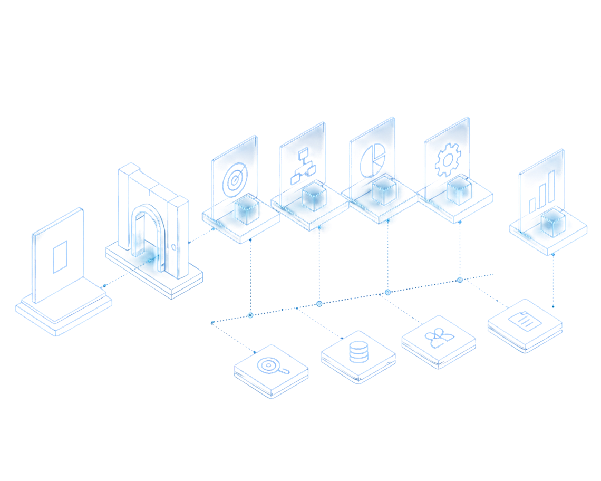
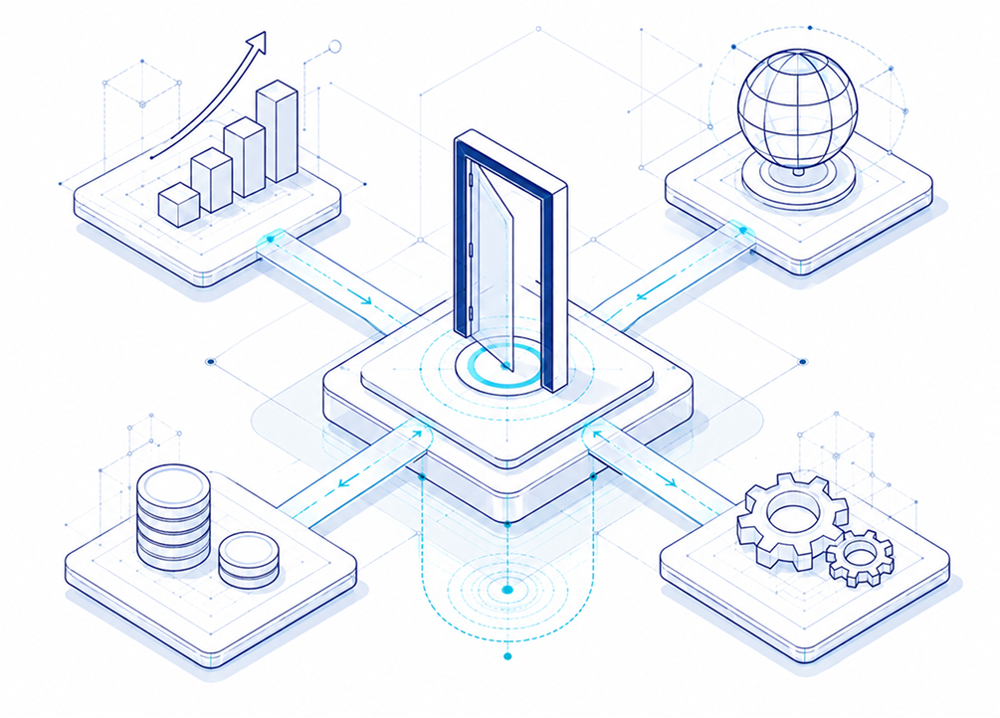